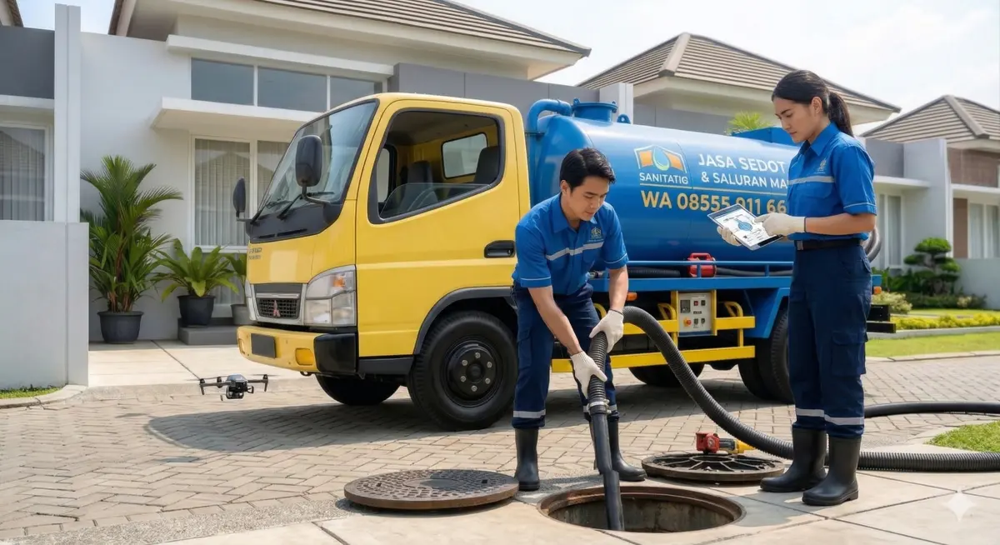

Pusat Sedot WC Jawa Barat - Solusi Sanitasi Perumahan, Kontrakan & Pabrik

Kawasan industri dan perumahan padat karya di Kabupaten Bekasi memiliki intensitas penggunaan fasilitas sanitasi yang sangat tinggi. Septic tank di kontrakan komunal, mess karyawan, hingga pabrik sering kali cepat penuh atau mengalami penyumbatan akibat pembuangan limbah domestik yang tidak terkontrol.
Jangan biarkan produktivitas dan kenyamanan penghuni terganggu! Pusat Sedot WC Jawa Barat (Cabang Kab. Bekasi) siap menerjunkan armada truk vacuum bertenaga tinggi untuk menuntaskan masalah sanitasi Anda hari ini juga, dengan harga jujur dan tanpa biaya siluman.
Kami sangat anti dengan praktik "tembak harga" di lokasi pengerjaan. Berikut estimasi layanan kami (Sistem 1x Sedot / 1x Datang per Septic Tank):
| Layanan Sanitasi & Armada | Biaya & Keterangan |
|---|---|
| Sedot Septic Tank (Per Tangki) | Rp 400.000 (Kapasitas tangki maksimal: 3 Kubik / 3000 Liter) |
| Selang Panjang (Masuk Gang Kontrakan) | Mampu menjangkau gang sempit hingga 100 Meter. Gratis 20 Meter pertama! |
| Pelancaran Pipa/Kloset Buntu | Hubungi Admin untuk estimasi pengerjaan pelancaran tanpa sedot. |
1. Berapa lama armada sampai ke lokasi saya di Kabupaten Bekasi?
Kami akan menugaskan armada terdekat dari lokasi Anda. Jadwal operasional kami sangat jelas: Pesan pagi datang siang, pesan siang datang sore, pesan sore datang besok.
Armada kami tersebar di berbagai kota untuk memastikan respons darurat tercepat. Pilih cabang terdekat dengan lokasi Anda: